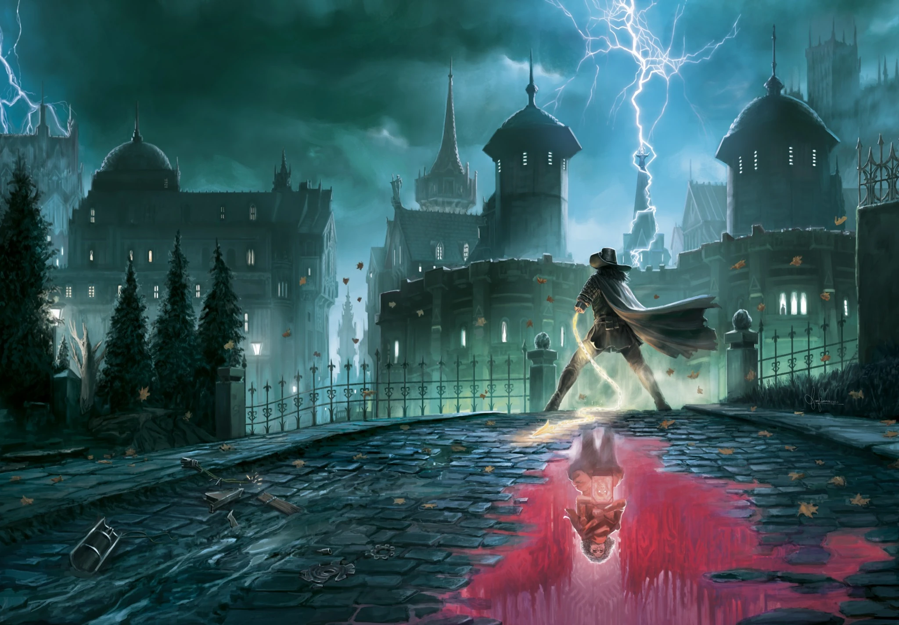
Un juego de Pablo Aguilera
En el Abismo
Una aventura de acción táctica, misterio y toques de rol.
Dentro de este libro. Únicamente un lápiz.
01 / El mundo
En el Abismo

Axel, un inquisidor tullido, persigue la hechicería con la furia de quien ha perdido demasiado. Pero nada le ha preparado para enfrentarse a su hermana en una última misión. Vassandra, marcada con el don del elementalismo, ha sido vista en el esquivo pueblo de Duskmàre, donde parece que se oculta una entrada al Abismo como una herida en el mundo.

Mientras ella se sumerge en la oscuridad en busca de respuestas, Axel debe decidir si será capaz de ajusticiarla y cuestionar cuanto cree saber sobre la ciencia, el dogma y la fe. Pero el Abismo no es solo una puerta a horrores y maravillas, sino un eco de tiempos olvidados, y el descenso revelará una verdad que trasciende la esperanza, el miedo y la propia existencia.

En el Abismo es un juego de Pablo Aguilera en el mundo de En las Cenizas. Una aventura de acción táctica, misterio y toques de rol que se juega dentro de este libro usando únicamente un lápiz.

Los dados están integrados en las páginas, mientras que tus marcas en el propio canto del libro permiten registrar la evolución de tus personajes, sus objetos y características.


Es una obra independiente: no necesitas haber jugado a En las Cenizas para disfrutarla, aunque quienes completaron la aventura anterior encontrarán sorpresas, personajes y consecuencias ligadas a sus antiguas decisiones.

Combate, huye, infíltrate e investiga. Interroga, persuade y negocia. Toma decisiones morales que transformarán la personalidad de tus personajes y despertarán inquietantes trastornos capaces de ayudarte… siempre que los mantengas bajo control.


Descubre novedosas mecánicas como la Furia, que convierte tus fallos en potencial sanguinario, el Telar, que hila las fuerzas de la naturaleza a tu favor, o la Hexared.


Participa junto al autor en la creación del mundo mediante decisiones de lore (que incluso podrás plasmar en sus ilustraciones).


Descubre decenas de habilidades, escenas de combate e investigación, símbolos que marcar en futuras páginas, mapas, encrucijadas morales, secretos, logros, objetos especiales y épicos, así como un diario para anotar tus pesquisas.


Galería

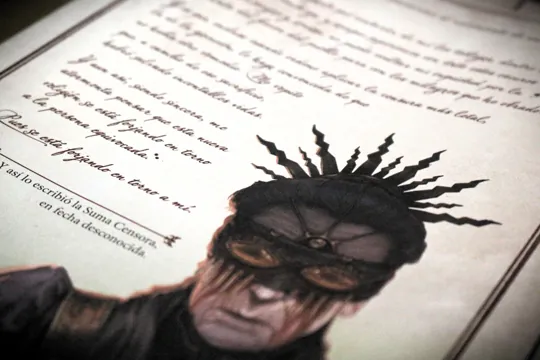

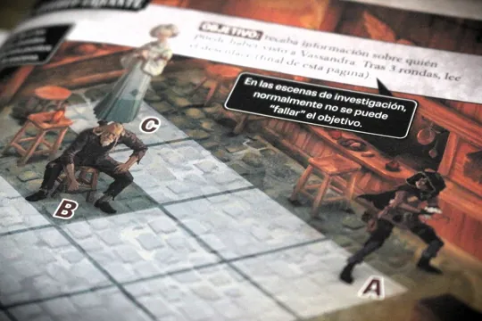

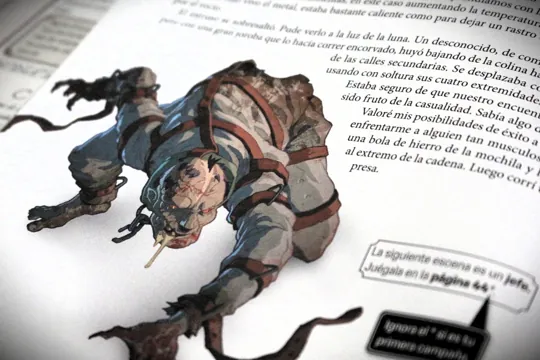


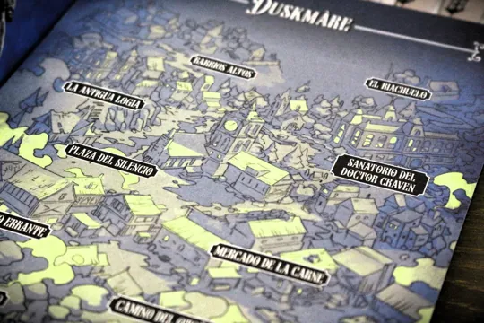


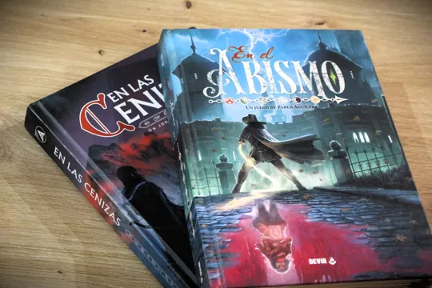


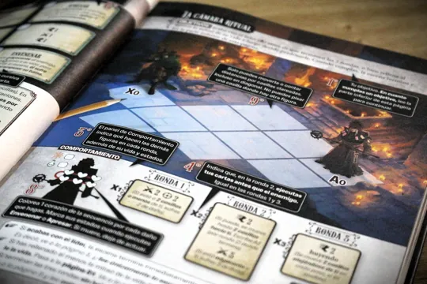


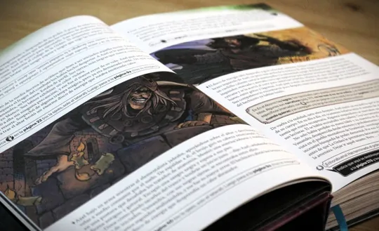


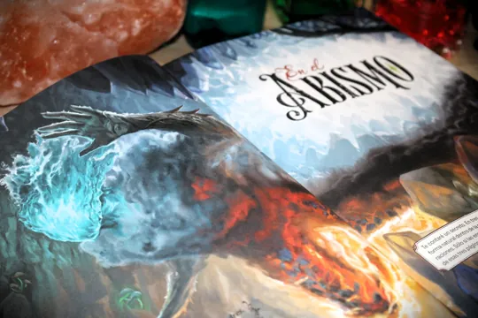


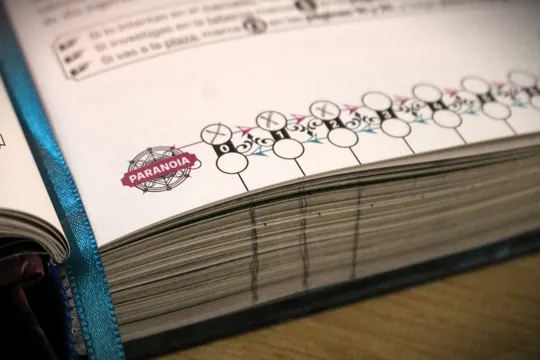

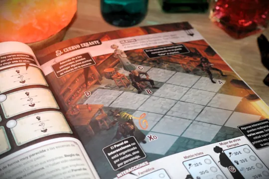


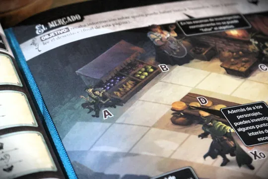


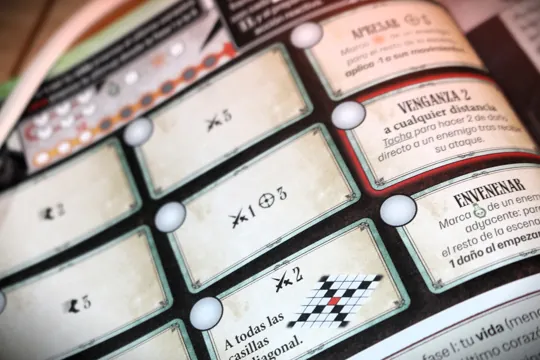


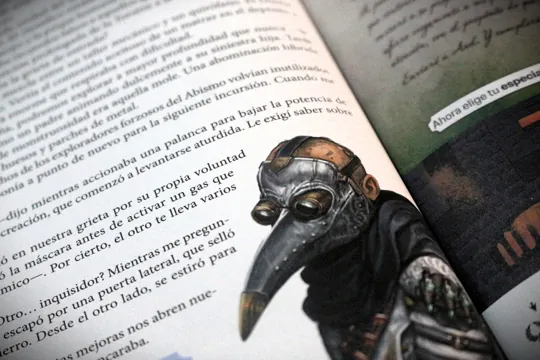

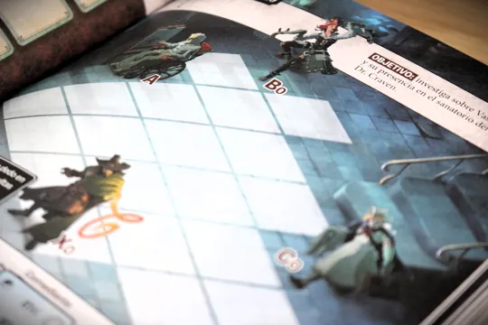

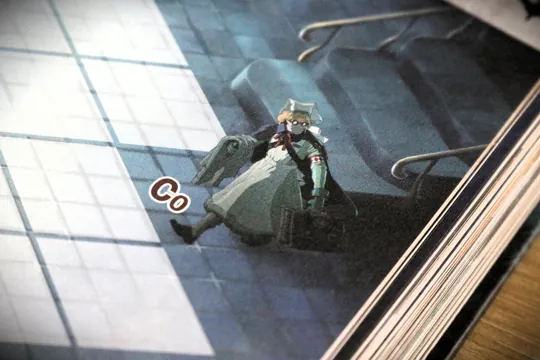


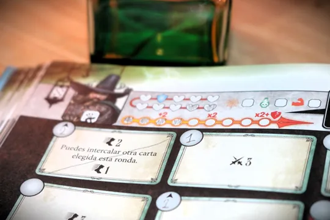


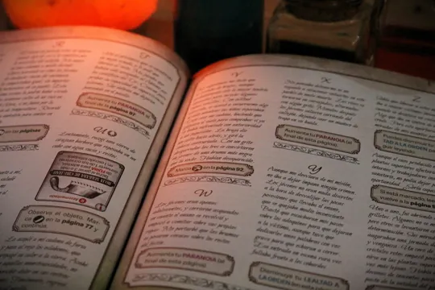

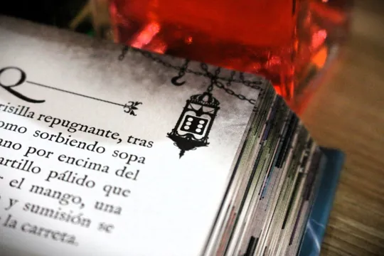

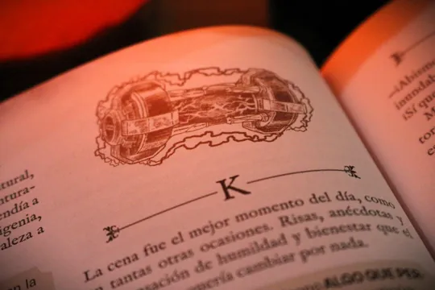

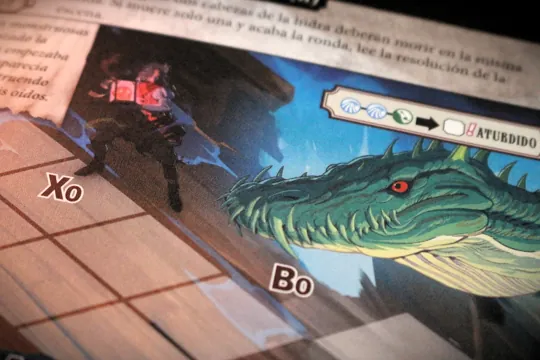


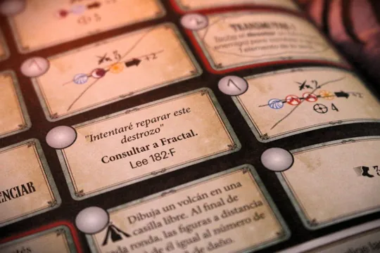


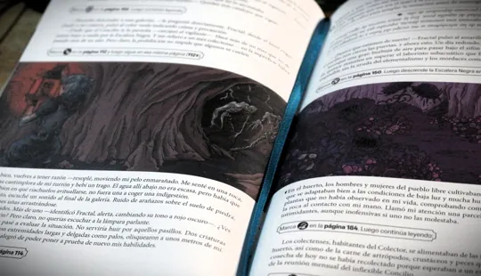

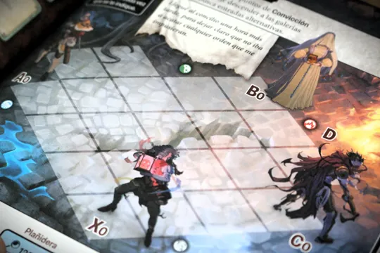


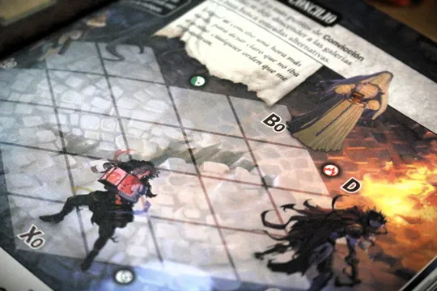

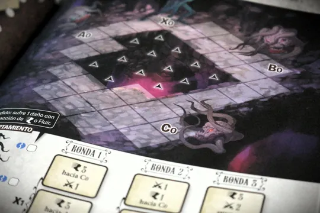

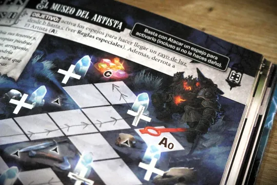

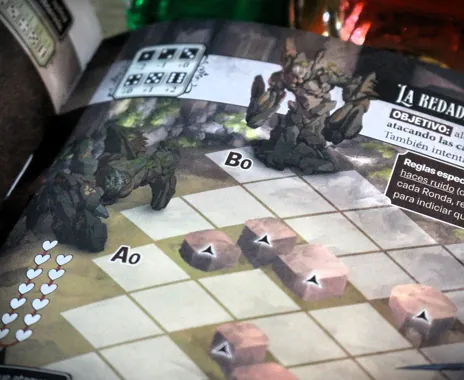

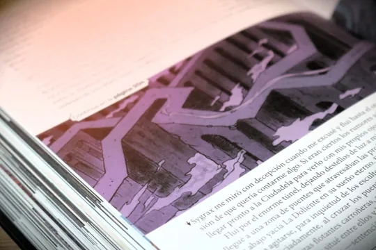

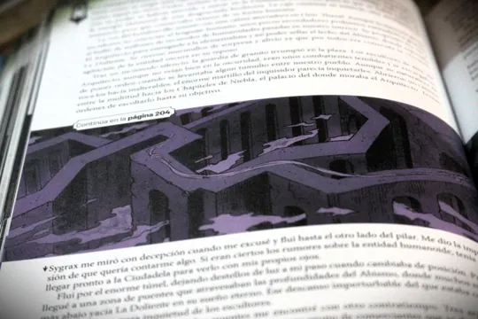


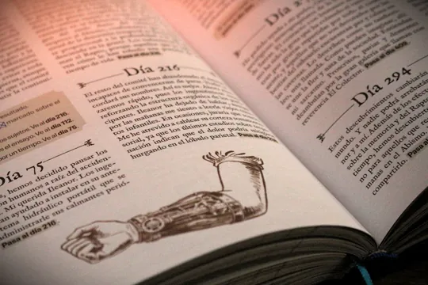

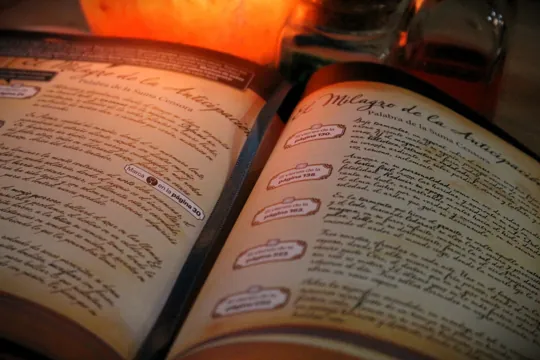

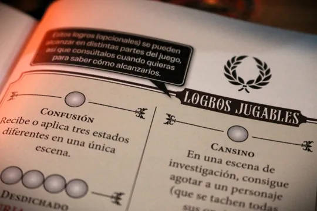